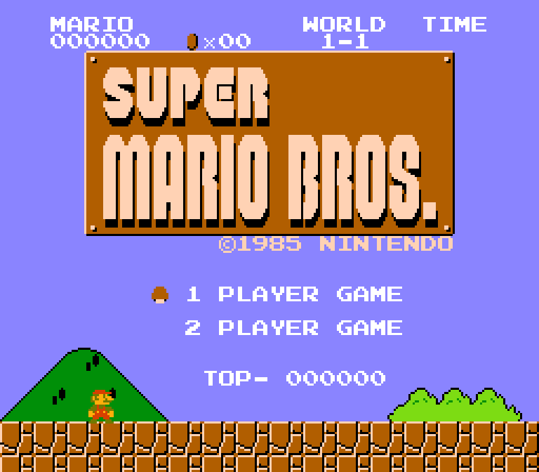
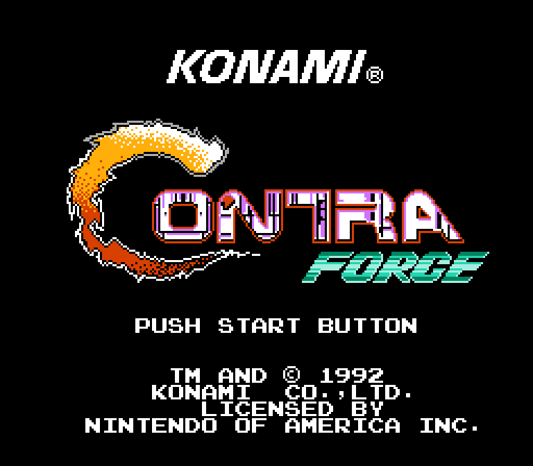
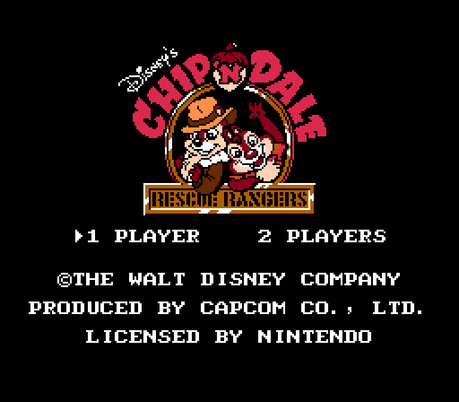
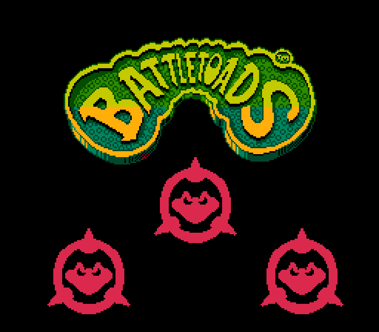

Открытый эмулятор Nintendo Entertainment System (NES), разработанный для эмуляции консоли так точно, как это возможно. Эмулирует процессор NES на уровне машинных циклов, что гарантирует поддержку разных временных программных трюков. Этот метод гарантирует корректную работу любой поддерживаемой игры.
Изначально разрабатывался только для Microsoft Windows, позже был портирован на Mac OS X и Linux.
Nestopia позволяет запускать игры на компьютере выпущенные для приставки NES с помощью образов ПЗУ. «Умеет» создавать скриншоты во время игры, а также делать захват аудио и видео без потери качества. Есть возможность переназначать кнопки контроллера, при этом, все настройки для каждого контроллера сохраняются в отдельных профилях. Поддерживает автоматическое переключение регионов (NTSC/PAL).
John NES Lite эмулятор NES/Famicom для Android 2.3+. Это приложение не работает без ваших ROM-ов.
Возможности:
Nintendo Entertainment System (NES) в Северной Америке и Европе, Famicom (от FAMIly COMputer — семейный компьютер) в Японии, Hyundai Comboy в Южной Корее — восьмибитная игровая консоль, популярная во второй половине 1980-х и начале 1990-х годов. В России известна под названием Dendy, по наиболее известному неофициальному клону.
Впервые консоль появилась на японском рынке в 1983 году под названием Famicom, а затем, переименованная в NES, вышла в Европе и США в 1985 году. Новинка оказалась исключительно удачной, и сумела завоевать практически весь американский и японский рынок. Консоль появилась с большим пакетом игр, среди которых самым известным и продаваемым стало семейство игр Super Mario Bros. Марио стал талисманом корпорации Nintendo. Всего, по официальным данным, было продано более 60 млн приставок и более 500 млн игр. Поскольку выход консоли произошёл вскоре после кризиса игровой индустрии, многие критики именно ей приписывают возрождение игрового рынка и открытие третьего поколения видеоприставок, так как удачные аппаратные характеристики и богатая библиотека игр вызвали интерес как у потребителей, так и у разработчиков, отвернувшихся было от игровой индустрии после краха.
С начала 1990-х годов популярность NES начала неуклонно снижаться из-за появления более совершенных шестнадцатибитных приставок, прежде всего Sega Mega Drive и следующего поколения консолей от самой Nintendo — SNES/Super Famicom. Тем не менее выпуск консоли продолжался вплоть до 2003 года.
Производство приставки было официально прекращено в 1995 году. Тем не менее, игровая библиотека NES доступна пользователям большинства современных компьютерных систем при помощи эмуляторов. Также в игры NES можно поиграть в Wii Virtual Console.
Придуман этой ночью для студентов, обучающихся по направлению "Веб разработчик", для демонстрации возможностей HTML и CSS.